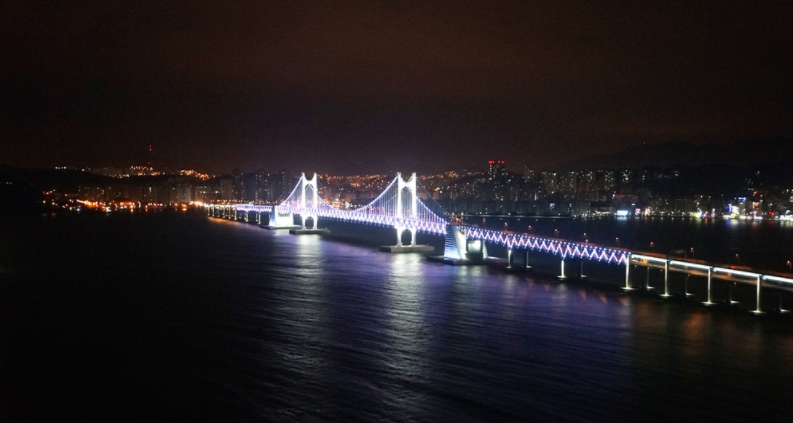
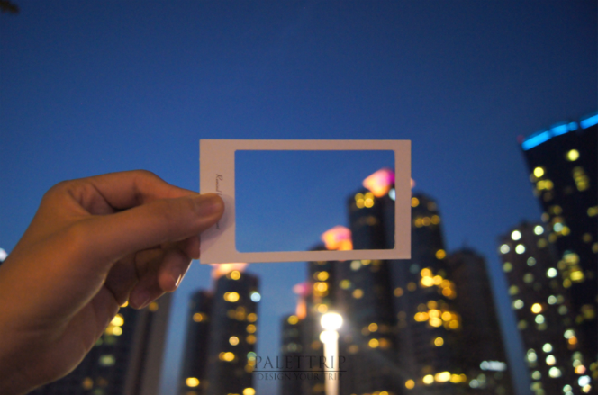
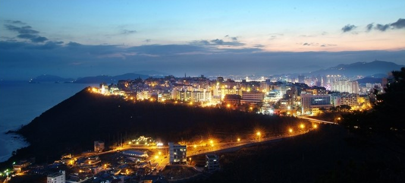
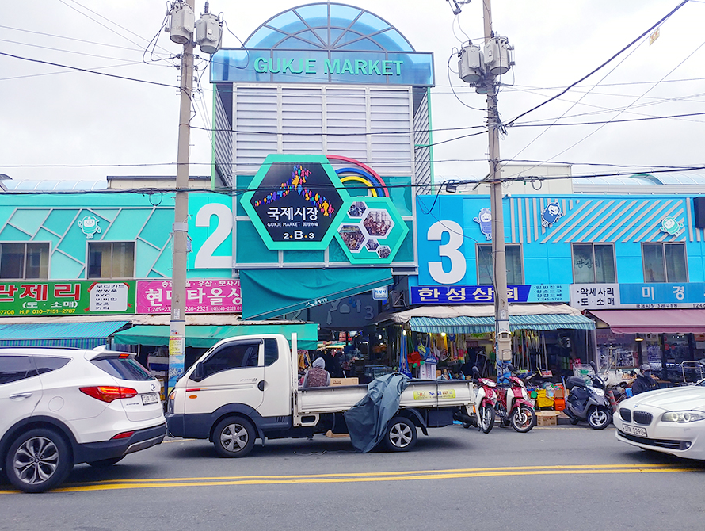

부산 여행하면 빼먹을수 없는곳 바로 광안리 해수욕장입니다. 해변이 크게있어 산책로 및 데이트코스로 유명하며 밤이되면 광안대교에 발이켜져 야경까지 이뻐 부산여행에 빠질수없는 명소입니다.ㄴ

데비이 101 은 부산안에있는 해외라 할정도로 야경및 분위각 좋아 많은사람들이 가는곳입니다. 바로옆에 해운대 해수욕장이 있어 여름에는 낮에 해수욕으 즐기고 밤에 야경과하며께 분위기좋은 추억을 남기기 좋은곳으로유명합니다.

부산 여행하면 꼭가야할곳 부산달맞이고개입니다. 낮에는 송정해수욕장과 해운대를 동시에 볼수있는 곳으로 유명하며 밤이되면 아름다음 야경과함께 분위기있는 장소가 많아 사람들이 드라이브하기 좋은곳으로 유명합니다. 특히 봄에 되면 길이 벚꽃으로 둘러쌓여 더욱더 풍경이 좋아 사람들이 많이 가는 특 명소이기도합니다.

부산에 와서 꼭들려야할 국제 시장! 입니다. 이미 많은 사람들에게 퍼저 한국인 외국인 할것없이 다알정도로 유명한곳인데요 영화까지 개봉하여 더욱 인기있는 관광 명소입니다. 밤이되면 아케이드 지붕으로 화려한 조명이 연출되어 쇼핑객이 특별한 분위기를 경함할 수 있는 곳입니다.